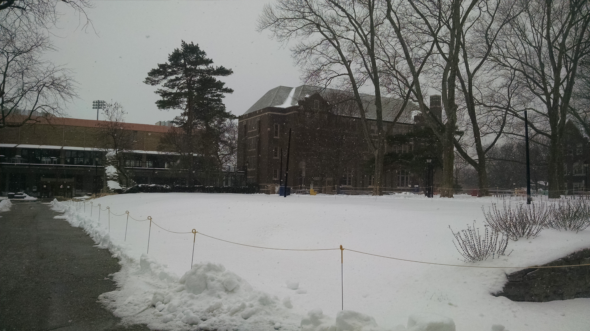

The Beauty of La Salle in Different Weathers
In the winter
La Salle in the Snow - by Duyen Doan, March 15, 2017
Duyen Doan is currently a senior, majoring in Information Technology. Class of 2017.
Click here to listen to music while watching snow on campus
Spirited Away soundtrack from anime.thehylia.com
Click here to visit my La Salle University

La Salle University in Winter 2016 by Duyen Doan
In the Fall

La Salle University in Fall 2015 by Duyen Doan
In the Spring

La Salle University in Spring 2016 by Duyen Doan